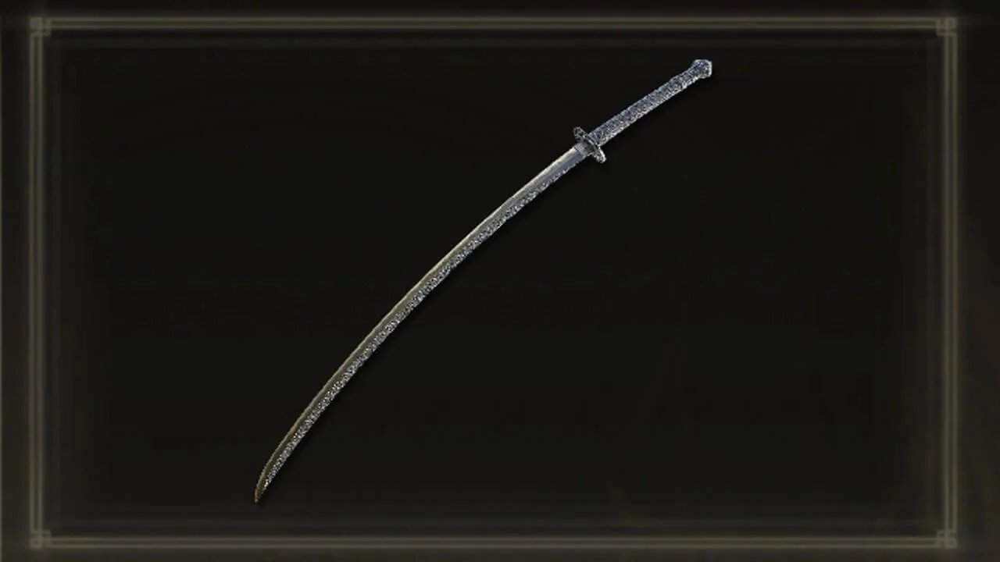

- RIOS DE SANGRE

Tipo de arma: Katana
Escalado: Destreza, Arcano (principalmente)
Daño base: Físico y de fuego
Efecto pasivo: Acumulación de hemorragia (sangrado) al golpear enemigos.
🩸 Habilidad especial: Corpse Piler (Montón de cadáveres)
Cuando la usas, el personaje realiza una serie de tajos rápidos envueltos en sangre, que golpean múltiples veces seguidas.
Cada impacto acumula sangrado muy rápido, haciendo que el enemigo pierda una gran cantidad de vida cuando se activa el efecto.
Es especialmente devastadora contra jefes o enemigos con mucha vida.
- MOONVEIL

⚔️ Tipo de arma: Katana
💥 Daño: Físico + Mágico
Efecto pasivo: Acumulación leve de sangrado
✨ Habilidad especial: Transitoria Lunar (Transient Moonlight)
Al usar esta habilidad, el portador desenvaina la katana y lanza una ola de energía mágica brillante.
Puede hacerse tanto con un ataque horizontal como vertical, dependiendo de si usas el botón de ataque normal o fuerte.
Esta ráfaga corta a distancia y atraviesa enemigos, causando gran daño mágico.
- ESPADON DE RANNI

🔹 Es un arma mágica y elegante, con una hoja azul brillante que parece hecha de luz lunar.
🔹 Escala principalmente con Inteligencia, ideal para magos.
🔹 Su habilidad especial, Luz de Luna Transitoria, lanza ondas mágicas de energía lunar que causan mucho daño y congelan enemigos.
🔹 Representa el vínculo y legado de Ranni como portadora del poder de la luna.
- APLASTAGIGANTES

🔹 Está hecho completamente de piedra maciza, con un aspecto rudo y primitivo, como si lo hubiera usado un titán.
🔹 Requiere mucha fuerza para manejarlo (60 de Fuerza), pero su daño físico es enorme.
🔹 Su habilidad, Golpe de Tierra (Ground Slam), permite aplastar el suelo con una fuerza brutal, enviando ondas de impacto.
🔹 Es tan grande que puedes usar dos al mismo tiempo para un daño absurdo si eres un personaje de fuerza pura.